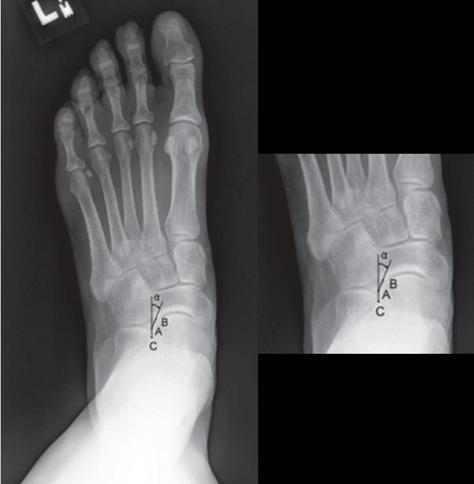
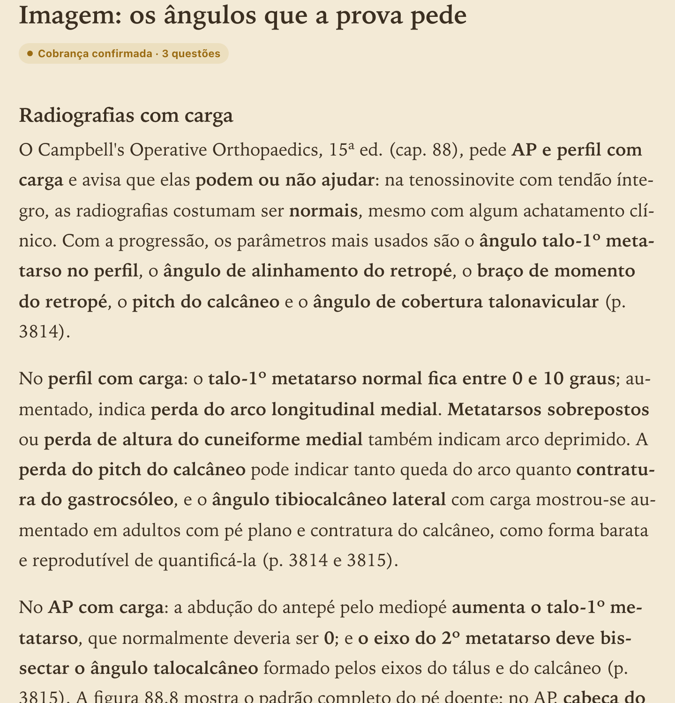
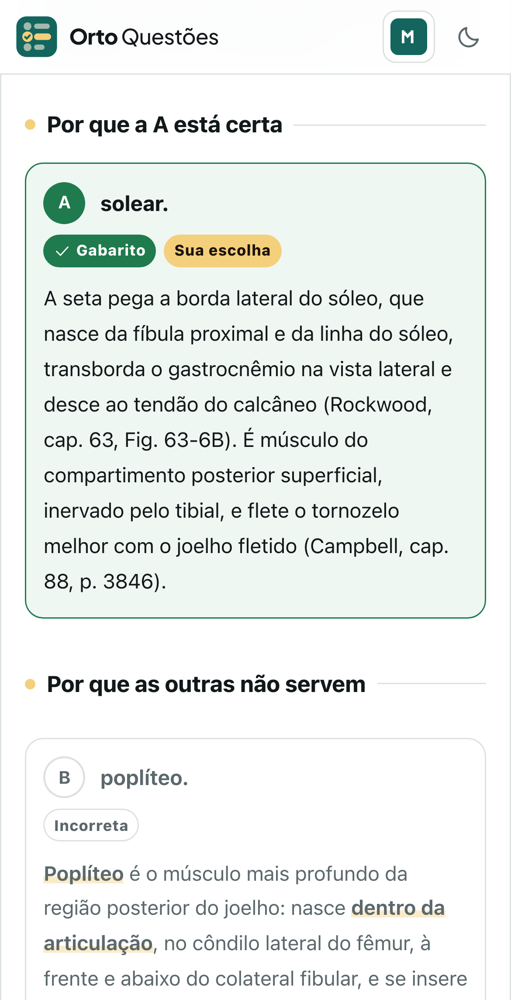

Pergunta da prova
Na insuficiência do tendão tibial posterior, a radiografia a seguir mostra o ângulo
De acordo com o Campbell
Medida de ELLIS (cap. 88, Fig. 88.6, p. 3816): a borda lateral do tálus até a borda lateral do navicular, contra a linha do colo do tálus. Ele aumentou no estágio IIB (p. 3815).
No próximo story: onde estudar isso
DA TRILHA PARA O LIVRO


Até 20 questões comentadas por dia · ortoquestoes.com.br · Telas ilustrativas